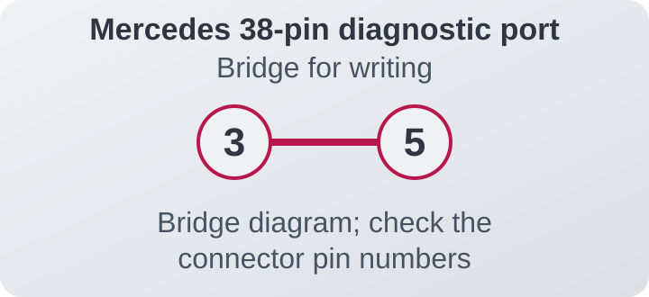
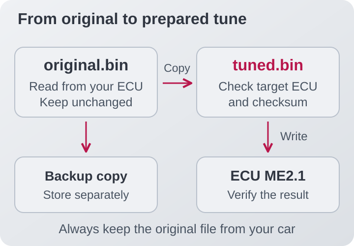

Before you start
Flashing a tune means writing the file containing the ECU's program and calibrations to its memory. This guide explains how to go from your original file to one prepared for your car; it does not cover editing fuel or ignition tables.
A compatible programmer
An interface, software and drivers that support your ME2.1. Galletto 1260 is one documented option: its list includes Mercedes Bosch ME2.1 / 28F200BB / R/W (read and write). Confirm support before buying your equipment. [1]
The right connection
A cable for your car's diagnostic socket and the programming-enable connection specified in the manual. If your car has the Mercedes 38-pin socket, also check the adapter wiring.
A stable power supply
A suitable power support unit for programming, with the laptop plugged in and sleep disabled. Maintain the voltage specified by the tool manufacturer. [2]
Your prepared file
An original backup from your ECU and a modified version prepared specifically for it. The dashboard and ELM327 are diagnostic tools; they do not replace a programmer.
01Identify your ECU
Photograph the label and save the Bosch and Mercedes part numbers. Then use the programmer's identification function to record the software version. Check that the selected protocol is for Mercedes Bosch ME2.1.
A CLK, SLK or C-Class from another model year may use a different ECU. This guide does not automatically apply to ME2.0, ME2.8 or the Siemens ECUs in EVO models. If the identification does not match, resolve that difference before reading or writing.
02Set up the connection
With the engine off, connect the equipment as instructed in its manual: power support, interface to computer and diagnostic cable to the car. Close the dashboard and any other application that might try to communicate with the ECU. Switch the ignition on or off when prompted by the software.


Documented ME2.1 procedures require an additional connection to enable programming. The pin, voltage and activation timing must come from your programmer's manual for that ECU. An adapter that works for diagnostics may not include this connection. [3]
The illustration shows the connection path, not the pin positions. If you do not have the diagram for your ECU, ask the supplier for the cable or instructions before continuing. Bench connections also require their own specific diagram.
03Read and save the original
- Select the Read function and wait for the software to confirm completion.
-
Save the file with a recognisable name, such as
CLK230_SW404_original.bin. Keep the label photo and identification details in the same folder. - Keep another backup somewhere other than the laptop. Always work on a duplicate.
As an extra check, read the ECU a second time and compare both complete files. If they differ, investigate before using either as a starting point. Identification time is not reading time: reading the program and calibration file can take much longer.
04Prepare the correct file
Send your original read to whoever prepares the calibration, along with the car's modifications and the fuel you use. The finished file must match your hardware and software: coming from another “230 Kompressor” is not enough.


The ME2.1 binaries included in this project are
262,144 bytes (256 KiB). That size is a
reference, not proof of compatibility. An .xdf,
.kp or .csv file contains map
definitions; it is not the binary to flash.
Also confirm the checksum, the file's internal integrity check. Do not assume the programmer corrects it: the historical FGTech list does not indicate automatic correction for these ME2.1 ECUs. [4]
05Write the new tune
Before pressing “Write”
- Original backed up and final file checked.
- ECU identified and correct protocol selected.
- Programming connection prepared according to the manual.
- Stable power supply and laptop sleep disabled.
Open the final file and select the write function (Write / Program). Follow the tool's prompts to enable programming and switch the ignition. Button names and the exact sequence depend on the programmer.
Wait for the final confirmation, including verification if the tool performs it. While writing, do not start the engine, unplug cables or cut the power. A pause in the progress bar is not a signal that it is safe to disconnect.
06Check the result
Once complete, follow the ignition sequence shown by the software. Remove the programming-enable connection and restore the normal wiring when instructed by the manual.
Check that the ECU still responds, read and save the fault codes, then check that the engine starts and idles correctly. If the tool can read back the same region that was written, compare that read with the final file. A successful flash confirms the transfer; it does not, by itself, validate the calibration at full load.
You can use our PC and Android dashboards for running checks. Validate fuelling and ignition with suitable instrumentation before putting the engine under load.
Common questions
Can I do this without opening the ECU?
There are ME2.1 procedures through the diagnostic connection that do not require opening the case. That does not eliminate the programming-enable connection. Confirm the procedure for your ECU part number and tool before dismantling anything. [3]
It reads correctly but will not write. Why?
Check programming enable, the protocol, the power supply and file compatibility. A working diagnostic link only confirms communication; it does not prove that the requirements for writing are met.
What if writing fails?
Save the error message and follow the manufacturer's recovery procedure. Do not cut the power on your own or try random files or jumper connections. An incomplete write can prevent the engine from starting and may require specialist recovery.
How long does it take?
It depends on the tool and protocol. Allow enough time to finish without rushing and follow the software's messages rather than a fixed time quoted in a tutorial.
Sources and scope
An overview of the process with original illustrations. Consult the tool's manual for the identified ECU for the exact wiring and programming sequence.
- Historical Galletto 1260 list: ME2.1 / 28F200BB protocol, read and write.
- Alientech FAQs: compatibility, connection modes and stable power.
- Firsthand ME2.1 programming account on MHH Auto: additional programming enable. The published example is an S500; its pinout is not applied here to CLK, SLK or C-Class models.
- FG Technology list, September 2012: write support and checksum column.